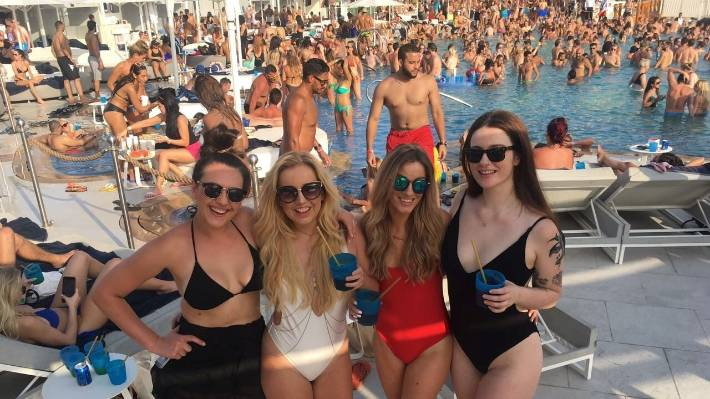

Head to the buzzing Kite Beach in Jumeirah, where activity-loving families and Dubai's hippest crowds go to cool off. A well-kept strip with plenty of space, there are a host of sports on offer including kitesurfing, beach football, beach tennis and volleyball, plus a skatepark and kids' play facilities. To refuel, the food truck-turned-beach-shack Salt serves up shakes and sliders so good, it attracts citywide food lovers.
rom high-end hotels and beach clubs to decadent dining, there's plenty for Dubai's sun-seekers to enjoy on this magnificent island. Whether you see it from a plane, when skydiving, or while researching your dream trip online, Dubai’s iconic palm-shaped island is extraordinary. This engineering marvel is synonymous with Dubai’s efforts to consistently evolve and make dreams come true. The neighbourhood offers an urban mix of island residences, glamorous five-star resorts, on-trend restaurants and chic beach clubs. Whatever your scene, you’re sure to find it here. Get sun-soaked at the family-friendly Riva Beach Club or W Dubai’s WET Deck while enjoying top tunes, refreshing poolside dining and five-star facilities. There are many private hotel beaches along The Palm that can be accessed with a day pass, though its waters offer aquatic adventures for everyone. Charter a luxury yacht and cruise along the vast coastline, or rev up the excitement with a speedboat ride and wakeboarding trips. In between the island's ‘fronds’, and along the trunk, the waters are calmer, making it a popular choice for kayaking and paddle-boarding. .
The five-star Atlantis, The Palm resort, located on the outer crescent, is a popular stop. The grand property is home to world-class restaurants by the likes of Nobu, Giorgio Locatelli and Gordon Ramsay, as well a waterpark, giant aquarium and more. Step outside to the Palm Jumeirah boardwalk, which comes alive at dusk with tourists and residents all vying for the perfect selfie. Sit by the rocks or grab a bite at a nearby food truck, and watch the sky ablaze with colour. Bicycles are also available to rent, allowing you to pedal along the shoreline and take in panoramic vistas of the Arabian Gulf. Looking for more to explore? Palm Jumeirah is home to the Nakheel Mall and The Pointe, both housing plenty of branded stores and family-friendly attractions. For relaxation lovers, a gentle walk along The Pointe's 1.5km promenade is a tempting option, affording the best waterside views of Atlantis in the distance. Getting there: If using the Dubai Metro, alight at either the Jumeirah Lakes Towers or Dubai Marina station and then take the Dubai Tram to the Palm Jumeirah stop. A short walk leads you to the Gateway station, which is the starting point for the Palm Jumeirah Monorail that runs along the main trunk of the island. Alternatively, take a water taxi to the Waldorf Astoria Palm Jumeirah.
Known for its sustainability initiatives, Al Marmoom is abundant with native wildlife such as gazelles, camels and birds. Once considered globally extinct, the Arabian oryx has successfully been saved after breeding programmes and re-introductions in the UAE, including at Al Marmoom. To catch a glimpse of the elusive oryx, head over to their feeding stations around the area. If birdwatching is your passion, visit the nearby Al Qudra lakes, home to 170 bird species including some endangered kinds like the Steppe Eagle and the Asian Houbara. The calming waters of Al Qudra lakes are also a welcome spot for nature-lovers to enjoy a picnic. Early risers can head over at dawn to catch a glorious desert sunrise.
Eat & Drink


This fan favourite may be tiny - its original Jumeirah branch has just five counter seats while a second outpost at Al Khawaneej is a tad bit bigger – but its fame ensures loyal diners are happy to take-away or eat in their cars. The High Jamz is a particular hit, with caramelised and crispy onions, Pepper Jack cheese, beef bacon and a ranch sauce melding together beautifully with the wagyu beef patty. Vegetarians are well served by the excellent aioli-topped King Shroom too. French Michelin starred chef Daniel Boulud is ironically best known for a dish that is decidedly all-American, the burger. He has appropriately titled his elevated take on the classic the Frenchie Burger au Feu de Bois – a juicy, wood-fired triumph with raclette cheese, onion and tomato compote and pickle sauce. This is the unabashedly fine dining take on the humble patty, and definitely worthy of a treat night.
Shopping Malls
Home to a ski slope, cinema complex and 560 shops and boutiques, a visit to the Mall of the Emirates is a must-see on any trip to Dubai. Shop, dine and stroll beneath the glamorous Fashion Dome, with its wrought iron ceiling reminiscent of European railways, at brands like Apple, Chanel, Burberry and Missoni just to name a few. Cinema, shopping and entertainment at Mall of the Emirates If you feel like a break from wandering the stores, check out any of the attractions available on site. The most popular attractions include Ski Dubai, Vox Cinemas and Magic Planet. There’s always something going on the ground floor, from fashion shows to family activities. There’s also the flagship branch of VOX Cinemas if you want to catch the latest blockbusters. To keep yourself fueled throughout your shopping adventure you can choose from the generous variety of dining outlets including Omnia, the ever-popular Din Tai Fung and hip coffee shop Common Grounds.
The Trek UAE bike shop, located at the end of Al Qudra Road, is a great place to rent your bike. Part of the track has road access for cars, but most of the track is for cyclists. Additionally, the path is equipped with rest stations along the way that offer benches and shade. You’ll also find restrooms located adjacent to Trek UAE and where Bab Al Shams Road meets Al Qudra. Platinum Heritage is a leading operator of desert experiences in Dubai, highlighting local Emirati culture and providing ultra-luxury expeditions.
Camps are based in a private, royal desert retreat and wildlife drives operate in the Dubai Desert Conservation Reserve, promising an exclusive and authentic Arabian experience. Whether you’re visiting in the morning, evening or staying overnight, Platinum Heritage offers something special to leave you with unforgettable memories.
Experience Bedouin life in Dubai with Platinum Heritage
Cruise across the golden dunes on board a vintage Land Rover or a luxury Range Rover to discover native desert animals including gazelles and Arabian oryx. Trace your way through the desert like a local, atop a traditional camel convoy and enjoy an authentic nomadic adventure with the Al Marmoom Bedouin Experience.
If your desert experience takes place at night, enjoy dining under the stars in an authentic camp or at a desert oasis, stargaze with a professional astronomer or immerse yourself in culture by meeting with Bedouins. One of the most memorable moments is the magical falconry demonstration, where you can even learn to fly the national bird.
Guests will receive the most authentic and unique Arabian experience exploring the private retreat on their desert safari, which explains why these once-in-a-lifetime adventures are on every visitor’s bucket list.<\p>

There may be no better way to discover Dubai than with Arabian Adventures. The tour company does all the work while you sit back and enjoy the view. With more than 63 adventure options, you’ll have no problem taking in the sights of the city through tours encompassing everything from the sands to the skyline. The Desert Safari experience takes you on a wild ride through the dunes with an authentic Arabic dinner to indulge in afterwards. With their Dubai City Tour, you can travel through time as you explore the Gold and Spice Souk and Dubai Creek. They can arrange for you to tour the Jumeirah Mosque and soak in the views from the top of Burj Khalifa too. And you can even sail along the coast with their Dhow Cruise excursion. With Arabian Adventures you choose which breathtaking view of Dubai you want. Planning for a special occasion? The tour company can also plan bespoke events for birthdays, anniversaries and Valentine's Day.
Billionaire Lifestyle
Experience a breathtaking free-fall and parachute experience with Skydive Dubai. Take the leap above the iconic Palm Jumeirah or over the Arabian desert and see the emirate from an entirely different perspective. If you have no experience, you don’t need to worry. The instructors will guide you through the whole process including a demonstration before even setting foot on a plane. Both the skydive locations in Dubai are world-renowned, with the best qualified instructors to gently guide you back on to the ground. With some experience you can explore advanced options like tandem skydiving, solo skydiving and the flight school. The dedicated flight school teaches you multiple forms like freefly, canopy, formation, wingsuit coaching and free-load organising. Take home the experience too, with a video of your skydive thanks to the talented videographers at Skydive Dubai.
The Under Water Train Marvel at Dubai's record-breaking under water train
ndian Railway Stations Development Corporation Ltd. (IRSDC), the nodal agency for station redevelopment in India, has shortlisted 9 bidders for the proposed redevelopment of iconic Chhatrapati Shivaji Maharaj Terminus (CSMT) Railway Station in South Mumbai. Godrej Properties, Anchorage Infrastructure Investments Holdings, Oberoi Realty, ISQ Asia Infrastructure Investments, Adani Railways Transport, Kalpataru Power Transmission, GMR Enterprises, Moribus Holdings. and BIF IV Infrastructur .. Read more at: https://economictimes.indiatimes.com//industry/transportation/railways/railways-shortlists-nine-bidders-for-mumbais-iconic-csmt-station-redevelopment/articleshow/83140740.cms?utm_source=contentofinterest&utm_medium=text&utm_campaign=cppst<\p> Submerged within the 30-acre Burj Lake, at the foot of The Dubai Mall, powerful water jets are laid out strategically over an area the length of two football pitches. The fountain jets up to 22,000 gallons of water as high as 140m in the air at any one time. How can you experience The Dubai Fountain? The fountains come to life every 30 minutes from 6pm, daily. The colourful, illuminated jets sways in time to a range of melodies, which will leave you spellbound. Some popular tracks include Michael Jackson's Thriller, Andrea Bocelli and Sarah Brightman's Time to Say Goodbye, and Power by Korean pop band EXO. Located at the foot of the Burj Khalifa, The Dubai Fountain Boardwalk allows visitors to get even closer to the spectacle, strolling the 272m floating platform – just nine metres from the fountains. You can experience this wonder even closer with the Dubai Fountain Lake Ride, setting sail on the lake itself during the water show. They’re truly the best seats in the house.